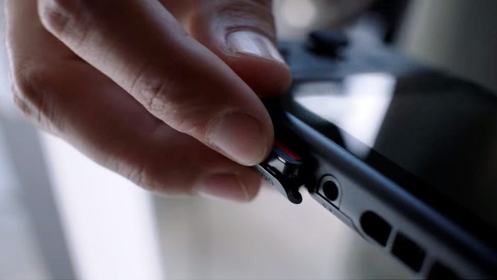
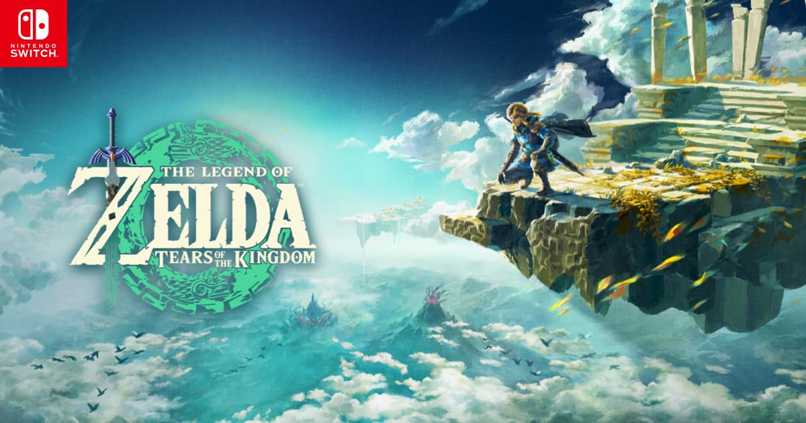
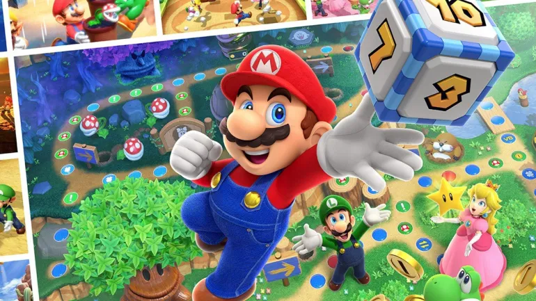

voltar para a pagina
anterior
Nitendo online tera mais 4 classicos em junho.

As novidades do mês incluem dois jogos para o Game Boy: Blaster Master: Enemy Below, que é uma continuação fiel do run’n’gun da Sunsoft, e Kirby Tilt ‘n’ Tumble, jogo que aproveita o giroscópio do Switch para emular o acelerômetro do quebra-cabeça de ação original.
A biblioteca do NES recebe Mystery Tower, que é um lançamento recém-renomeado do jogo de Famicom da Namco, Tower of Babel, até então exclusivo do mercado japonês. E finalmente, um clássico de SNES, o primeiro jogo da série Harvest Moon, será adicionado à coleção do Switch Online.

Midia Fisica de Zelda: tears of kingdon esta
disponivel no Brasil

A mídia física, que estava em pré-venda desde maio, aparece com preço sugerido de R$ 399. Vale lembrar que além do game, também estão disponíveis o console Nintendo Switch – Modelo OLED (preço sugerido de R$ 2.999) e o Controle Pro (preço sugerido de R$ 429), temáticos do novo jogo da franquia
A Nintendo anunciou na última sexta-feira (2) que a versão física de Zelda: Tears of the Kingdom já está disponível no Brasil
Escolha dos melhores jogos da nitendo para curtir com a familia

Sendo uma das mais tradicionais empresas de games, a desenvolvedora é conhecida por suas várias franquias que agradam uma diversidade de gostos diferentes. Entre os muitos jogos da companhia, existem aqueles onde o multiplayer é a estrela do show, com títulos excelentes para poder se aproveitar ao lado da família e amigos.Confira alguns dos multiplayers do encanador:
Mario Kart 8 Deluxe
Super Mario Party
Mario Strikers: Batle league
confira outros multiplayers da nintendo
Nintendo Switch sports
Donkey kong country: tropical freeze
Super smash bros. Ultimate